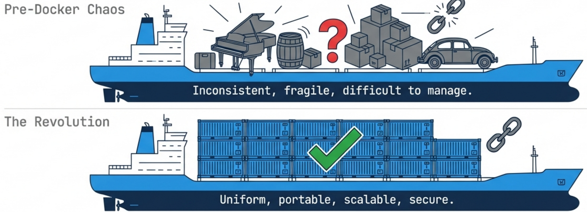
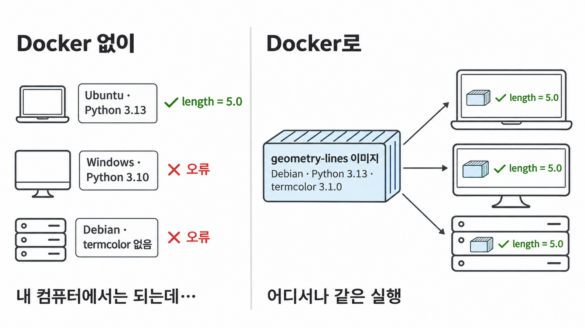
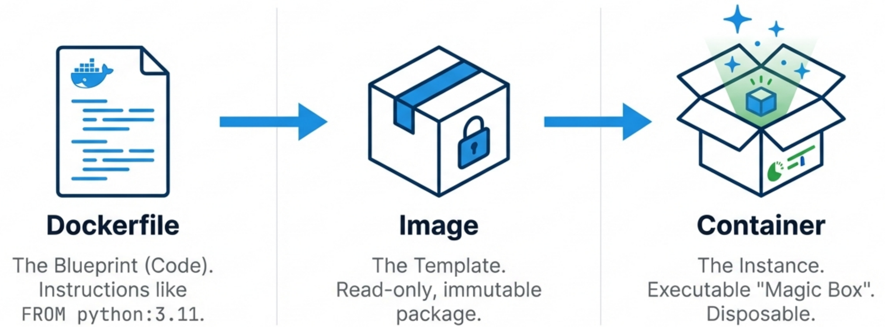

Outline
중심 문제: uv.lock으로 Python 패키지 버전을 고정해도 컴퓨터마다 운영체제·Python 설치가 달라 같은 프로젝트가 다르게 실행됨 · 해법: 운영체제부터 실행 명령까지 이미지 하나로 묶어 어느 컴퓨터에서나 같은 컨테이너로 실행
| 순서 | 묶음 | 답할 질문 | 장표 |
|---|---|---|---|
| ① | Docker 소개 | 컨테이너가 왜 필요하고, Dockerfile·이미지·컨테이너는 어떻게 이어지는가 | 2–5장 |
| ② | uv와 Docker | uv가 이미 고정하는 것과 Docker가 더 고정하는 것은 무엇인가 | 6–7장 |
| ③ | Docker 환경 설정 | uv 프로젝트를 이미지로 만들어 실행하는 방법 | 8–10장 |
| ④ | Docker 사용 예 | 설치 없이 다른 Python 실행, 내 코드 실행, 웹 서버 열기, 자주 쓰는 명령 | 11–14장 |
선행 지식
uv.lock·uv sync: 패키지 버전을 기록한 잠금 파일과 그대로 설치하는 명령- 가상환경
.venv: 프로젝트별 Python 패키지 설치 폴더 - 공통 예제 geometry-lines: 두 점 거리 계산 패키지, 공개 명령
line-length 0 0 3 4→length = 5.0, 글자색 패키지 termcolor 사용
새로 배울 도구
- Docker: 프로그램과 실행 환경을 이미지 하나로 묶어 컨테이너로 실행하는 오픈소스 도구
- Dockerfile(지시문 파일) → 이미지(실행에 필요한 파일 전체를 묶은 읽기 전용 틀) → 컨테이너(이미지로 만든 실행 사본)
실행 환경 차이와 컨테이너
질문: 같은 저장소와 uv.lock을 받았는데 다른 컴퓨터에서 실패하는 원인은 무엇이고, 컨테이너는 그 원인을 어떻게 없애는가?

실패 원인: 코드 밖의 실행 환경
- 컴퓨터마다 다른 것: 운영체제 배포판·버전, Python 설치 여부·버전, 운영체제에 설치된 프로그램 묶음(시스템 라이브러리)
uv.lock이 고정하는 대상: Python 패키지 버전 → 운영체제 쪽 차이는 그대로 남음(7장)
컨테이너(container)
- 정의: 운영체제 파일(명령·라이브러리)·Python·패키지·코드를 한 상자로 묶어 다른 프로그램과 분리해 실행하는 단위
- 비유 대응: 화물 = 프로그램, 같은 규격 상자 = 같은 실행 방식 → Docker가 설치된 컴퓨터는 같은 방법으로 실행
- 한계: 하드웨어를 직접 다루는 운영체제 핵심부(커널)는 상자 밖, 실행 중인 컴퓨터의 것 사용 → Linux용 컨테이너는 Linux 커널 필요, Windows·macOS는 Docker가 내부 Linux 환경을 띄워 실행(8장)
Docker를 쓸 때의 이점
질문: Docker를 쓰면 같은 프로젝트를 여러 컴퓨터에서 실행한 결과가 어떻게 달라지는가?

그림 읽기
- 이미지: 운영체제 파일·Python·패키지·코드를 묶은 읽기 전용 실행 환경 꾸러미(4장), 그림이라는 뜻 아님
- 왼쪽: 각자 손으로 설치한 환경 → Python 3.10은
requires-python = ">=3.11"불충족, termcolor 없음은 import 실패 - 오른쪽: 같은 이미지 하나로 컴퓨터마다 각자 컨테이너를 만들어 실행 → 세 곳 모두
line-length 0 0 3 4의 결과length = 5.0
uv만 쓸 때와 비교
- uv(Python 패키지 관리 도구): Python 버전·패키지까지 맞춤, 단 컴퓨터마다 uv 설치 +
uv sync필요, 운영체제 쪽은 그대로(7장) - Docker 비용: 모든 컴퓨터에 Docker 설치, 이미지 저장 공간(이 덱의 출발 이미지 하나 118MB)
이미지와 컨테이너
질문: 이미지와 컨테이너는 무엇이 다르고, 이미지 하나에서 컨테이너가 몇 개 생기는가?

$ docker run --name c1 python:3.13-slim-trixie python --version
Python 3.13.18
$ docker run --name c2 python:3.13-slim-trixie python -c "print(2 + 3)"
5
$ docker ps -a --filter ancestor=python:3.13-slim-trixie --format 'table {{.Names}}\t{{.Image}}\t{{.Status}}'
NAMES IMAGE STATUS
c2 python:3.13-slim-trixie Exited (0) Less than a second ago
c1 python:3.13-slim-trixie Exited (0) Less than a second ago- 이미지(image)
python:3.13-slim-trixie: Docker Hub(공개 이미지 저장소)의 공식 Python 이미지,:뒤 태그 = Python 3.13 + Debian 13(trixie) 최소 구성(slim) docker run --name c1 이미지 명령: 이미지로 컨테이너 c1을 만들어 명령 실행 → 실행 한 번 = 컨테이너 하나docker ps -a: 끝난 것까지 컨테이너 목록 → 이미지 1개에서 c1·c2 두 개, 둘 다 정상 종료(Exited (0))
Dockerfile과 레이어 캐시
질문: Dockerfile의 각 줄은 이미지에 무엇을 쌓고, 다시 build할 때 어느 단계를 재사용하는가?
Dockerfile (예제 폴더 hello-layers: Dockerfile + hello.py)
FROM python:3.13-slim-trixie
WORKDIR /app
COPY hello.py .
RUN python -c "print('build step')"
CMD ["python", "hello.py"]FROM | 출발 이미지(4장) 가져옴 |
WORKDIR | 작업 폴더 /app 생성·지정 |
COPY | 호스트(Docker를 실행하는 컴퓨터)의 파일을 이미지로 복사 |
RUN | build 중 명령 실행(hello.py를 읽지 않음) |
CMD | 시작 때 기본 명령, 설정만 기록 → build 단계·레이어 아님 |
- 레이어(layer): build 단계 하나가 이미지에 더하는 파일 변경 묶음 → 이미지 = 레이어를 차례로 쌓은 것 · 단계 = 출력의
[n/4]한 줄 = CMD를 뺀 지시 한 줄
docker build: Dockerfile을 위 줄부터 실행해 이미지를 만드는 명령 · docker build --progress=plain -t hello-layers .를 세 번 실행한 단계별 결과 · [2/4] = build 단계 4개(CMD 제외 지시) 중 2번째 · DONE = 실행, CACHED = 이전 결과 재사용
| build | [1/4] FROM | [2/4] WORKDIR | [3/4] COPY | [4/4] RUN |
|---|---|---|---|---|
| 1차: 이 예제 처음 | DONE 0.0s | CACHED | DONE | DONE |
| 2차: 변경 없음 | DONE 0.0s | CACHED | CACHED | CACHED |
| 3차: hello.py 수정 뒤 | DONE 0.0s | CACHED | DONE | DONE |
FROM DONE 0.0s: 이미 받아 둔 출발 이미지를 불러오기만 함(새 레이어 없음) · 1차 WORKDIR CACHED: 이 컴퓨터의 이전 build가 같은 출발 이미지 위에 같은 지시를 이미 실행해 둠(처음 쓰는 컴퓨터는 DONE)
- 캐시 규칙: 앞 레이어가 모두 같고 지시·입력 파일도 같을 때만 재사용 → 한 레이어가 바뀌면 그 뒤 단계는 모두 다시 실행
- 3차 판정: 앞의 WORKDIR는 재사용, hello.py가 바뀐 COPY는 입력 변경으로, RUN은 지시·입력이 그대로인데도 바뀐 COPY 뒤라서 다시 실행
uv와 Docker의 같은 점
질문: uv와 Docker는 어떤 같은 방식으로 '다른 컴퓨터에서도 같은 환경'을 만드는가? · 단계 전환: 앞 구간 = Docker의 기본 개념, 지금부터 = Python 프로젝트 관리 도구 uv와의 비교
| 공통 단계 | uv(Python 패키지·Python 버전 관리 도구) | Docker |
|---|---|---|
| ① 환경을 파일에 적음 | pyproject.toml(의존성 범위) + uv.lock(정확한 버전) | Dockerfile(설치 지시, uv 프로젝트용은 9장에서 작성) |
| ② 버전을 파일에 지정 | uv.lock의 termcolor 3.1.0(내용 고정) | FROM python:3.13-slim-trixie의 태그(이름 지정, 내용 고정 아님) |
| ③ 명령 하나로 재현 | uv sync | docker build |
| ④ 재현 결과물 | .venv(가상환경) | 이미지 |
| ⑤ 저장소에 커밋 | pyproject.toml·uv.lock | Dockerfile(uv 프로젝트는 uv의 두 파일도 함께) |
②의 차이: 이미지 태그는 게시자가 새 내용에 다시 붙일 수 있는 이름 → 같은 태그로 build해도 시점에 따라 출발 이미지 내용이 바뀔 수 있음 · uv.lock은 버전 번호와 함께 패키지 파일의 해시(파일 내용으로 계산한 지문, sha256:6a6d…)를 기록 → 받은 파일 내용이 다르면 설치 중단, Python 패키지 저장소 PyPI도 이미 올린 파일 이름(termcolor-3.1.0.tar.gz)에 새 내용을 다시 올리지 못하게 막음
uv와 Docker의 다른 점
질문: uv.lock이 있는데도 Docker가 필요한 이유는 무엇인가?
같은 Ubuntu 컴퓨터: 호스트에서 uv로 실행 vs 출발 이미지 python:3.13-slim-trixie의 컨테이너(…: 내려받기·설치 줄 생략)
$ grep PRETTY_NAME /etc/os-release PRETTY_NAME="Ubuntu 24.04.3 LTS" $ uv run python --version Downloading cpython-3.13.18-linux-x86_64-gnu (download) (33.9MiB) … Using CPython 3.13.18 … Python 3.13.18 $ docker run --rm python:3.13-slim-trixie sh -c 'grep PRETTY_NAME /etc/os-release; python --version' PRETTY_NAME="Debian GNU/Linux 13 (trixie)" Python 3.13.18
grep PRETTY_NAME /etc/os-release: 운영체제 정보 파일 /etc/os-release에서 운영체제 이름 줄 PRETTY_NAME을 찾아 출력 → 출력 = 지금 실행 중인 운영체제 이름 · uv: .python-version(3.13)에 맞는 Python이 없으면 직접 내려받음 · --rm: 끝난 컨테이너 자동 삭제 · sh -c: 명령 두 개를 한 컨테이너에서 실행
| 층(위 → 아래) | uv(uv.lock·.python-version) | 출발 이미지 python:3.13-slim-trixie(왼쪽에서 실행) |
|---|---|---|
| 실행 명령 | 기록 안 함: 사람이 입력 | 프로젝트 명령 없음: 왼쪽처럼 사람이 입력 |
| Python 패키지 | 고정: uv.lock의 8개 | 프로젝트 패키지 없음 |
| Python 실행기 | 버전 맞춤: 컴퓨터마다 내려받음(3.13.18) | 3.13.18 포함(2026-11 현재 태그 기준) |
| 운영체제·시스템 라이브러리 | 고정 안 함: 호스트 것(Ubuntu 24.04.3) | 고정: Debian 13 파일 포함 |
| 커널 | 호스트 것 | 호스트 것 공유(2장) |
Docker 설치와 hello-world 확인
질문: Docker가 설치되어 컨테이너를 실행할 수 있는지 무엇으로 확인하는가? · 단계 전환: 앞 구간 = 왜 Docker인가, 지금부터 = 직접 설치하고 이미지를 만드는 순서
| 운영체제 | 설치할 것(공식 설치 안내) |
|---|---|
| Windows·macOS | Docker Desktop: 엔진·화면 포함, 내부 Linux 환경에서 컨테이너 실행 |
| Linux(Ubuntu) | Docker Engine: 공식 apt 저장소의 docker-ce 등 |
Linux 설치 뒤 한 번: 사용자를 docker 그룹에 추가 → 다시 로그인하면 sudo 없이 실행
sudo usermod -aG docker $USER
docker run hello-world- Docker 클라이언트(
docker명령) → Docker 데몬(daemon: 이미지·컨테이너를 관리하는 상주 서비스)에 요청 → 데몬이 실행 - 판정:
Hello from Docker!출력 = 설치 성공, 처음 한 번은 이미지 내려받기 줄이 먼저 나옴
$ docker run hello-world
Unable to find image 'hello-world:latest' locally
latest: Pulling from library/hello-world
4f55086f7dd0: Pull complete
Status: Downloaded newer image for hello-world:latest
Hello from Docker!
This message shows that your installation appears to be working correctly.
To generate this message, Docker took the following steps:
1. The Docker client contacted the Docker daemon.
2. The Docker daemon pulled the "hello-world" image from the Docker Hub.
(amd64)
3. The Docker daemon created a new container from that image which runs the
executable that produces the output you are currently reading.
4. The Docker daemon streamed that output to the Docker client, which sent it
to your terminal.uv 프로젝트용 Dockerfile
질문: uv 프로젝트를 이미지로 만들려면 Dockerfile에 무엇을 어떤 순서로 적는가? · uv 공식 Docker 안내의 기본 형태 · 위치: geometry-lines 저장소 맨 위 폴더
Dockerfile (줄 번호는 설명용)
FROM python:3.13-slim-trixie
COPY --from=ghcr.io/astral-sh/uv:0.13.8 /uv /uvx /bin/
WORKDIR /app
ENV UV_NO_DEV=1
COPY pyproject.toml uv.lock ./
RUN uv sync --locked --no-install-project
COPY . .
RUN uv sync --locked
ENV PATH="/app/.venv/bin:$PATH"
CMD ["line-length", "0", "0", "3", "4"].dockerignore: COPY . .에서 뺄 목록
.venv
__pycache__ENV: 이미지에 환경 변수(프로그램이 읽는 이름=값 설정) 기록 · __pycache__: Python이 만드는 실행 준비 파일 폴더
| 줄 | 하는 일 |
|---|---|
| 1–2 | 출발 이미지 + uv 공식 이미지(ghcr.io: GitHub의 이미지 저장소)에서 uv 실행 파일(/uv, 보조 명령 /uvx)만 복사, 0.13.8 지정 |
| 3 | 작업 폴더 /app → 이후 복사 파일과 .venv가 /app 아래 생김 |
| 4 | 6·8줄의 uv sync가 UV_NO_DEV=1을 읽어 dev 그룹(pytest) 제외 |
| 5–6 | pyproject.toml·uv.lock만 먼저 복사 → 의존성만 설치(--no-install-project) · 두 파일이 바뀔 때만 다시 실행 · --locked: 두 파일이 서로 맞지 않으면 중단 |
| 7–8 | 나머지 코드 복사 → 프로젝트 자신 설치 · 코드만 바뀌면 5–6줄 재사용(5장 규칙), 한 번에 COPY . . 뒤 설치하면 코드 수정마다 의존성 설치 반복 |
| 9–10 | 명령 검색 경로 PATH 앞에 /app/.venv/bin → line-length 바로 실행 · 기본 명령 |
| .dockerignore | 호스트 .venv(컴퓨터마다 다른 가상환경)가 이미지로 들어가지 않음 |
docker build와 docker run
질문: 9장 Dockerfile로 docker build와 docker run을 실행하면 각각 무엇이 만들어지고 무엇이 출력되는가? · 위치: geometry-lines 저장소 맨 위 폴더(Dockerfile이 있는 곳)
① docker build: Dockerfile을 읽어 이미지를 만듦
$ docker build -t geometry-lines . (build 진행 줄 생략) $ docker image ls geometry-lines REPOSITORY TAG IMAGE ID CREATED SIZE geometry-lines latest 3ccc9f1b7346 2 hours ago 169MB
-t geometry-lines: 만들 이미지의 이름 · 태그를 생략하면latest- 끝의
.: Dockerfile이 있는 현재 폴더 - 결과물: 이름·태그가 붙은 이미지
geometry-lines:latest→docker image ls(이미지 목록)에 표시, 끝의geometry-lines= 그 이름의 이미지만 표시 - 목록의 열: REPOSITORY = 이미지 이름, TAG = 태그, IMAGE ID = 이미지 식별 번호, CREATED = 만든 시점, SIZE = 크기 · 이 예의
2 hours ago: 같은 Dockerfile·파일로 2시간 전에 만든 이미지를 그대로 재사용(5장), 처음 build하면… seconds ago
② docker run: 이미지로 컨테이너를 시작해 프로그램 실행
$ docker run geometry-lines length = 5.0
- 실행 대상: Dockerfile 마지막 줄 CMD에 적은 기본 명령(
line-length) - 결과물: 프로그램의 실행 결과가 화면에 출력(
length = 5.0) - 컨테이너: 이미지로 만든 실행 중인 사본 · 프로그램이 끝나면 컨테이너도 멈춤
docker build → 이미지 → docker run → 컨테이너가 프로그램 실행 → 화면 출력- 다른 컴퓨터에서 같은 결과: 이미지 파일을 보내지 않고 저장소(Dockerfile·코드)를 받아 같은 두 명령 실행 → 내용이 같은 이미지가 그 컴퓨터에 생김
설치 없이 다른 Python 버전 실행
질문: 내 컴퓨터에 없는 Python 3.12로 코드 한 줄을 실행하려면 무엇을 입력하고, 내 컴퓨터의 Python은 어떻게 되는가? · Docker 사용 예 ① · 공식 Python 이미지의 태그만 바꿔 원하는 버전 선택
실행할 명령과 실제 출력(처음 한 번은 이미지 내려받기 줄이 먼저 나옴, 생략)
$ python3 --version Python 3.9.13 $ docker run --rm python:3.12-slim python -c "import sys; print(sys.version)" 3.12.16 (main, Nov 5 2026, 07:58:20) [GCC 14.2.0] $ python3 --version Python 3.9.13
python:3.12-slim | 공식 Python 이미지, 태그 3.12-slim = Python 3.12 최소 구성 |
python -c "…" | 따옴표 안 Python 코드를 컨테이너 안에서 바로 실행 |
--rm | 실행이 끝난 컨테이너 자동 삭제 → 컨테이너 목록에 남지 않음 |
얻는 것
- 화면 출력
3.12.16: 컨테이너 안 Python 3.12로 실행된 결과 - 내 컴퓨터의 Python(이 예: 3.9.13)은 실행 전후 그대로, 새로 설치한 것 없음
- 다른 버전: 태그만 바꿈(예:
python:3.13-slim-trixie, 4장) - 쓰는 때: 내 코드가 다른 Python 버전에서도 도는지 확인할 때
내 폴더의 코드를 컨테이너에서 실행
질문: Python을 설치하지 않은 채 내 폴더의 hello.py를 컨테이너에서 실행하려면 무엇을 연결하는가? · Docker 사용 예 ② · 이미지를 새로 만들지 않고 공식 Python 이미지 그대로 사용
내 폴더(hello.py 하나)에서 실행
$ cat hello.py
import platform
print("hello from my file, Python", platform.python_version())
$ docker run --rm -v "$PWD":/app -w /app python:3.13-slim-trixie python hello.py
hello from my file, Python 3.13.18-v "$PWD":/app | 내 컴퓨터의 현재 폴더($PWD)를 컨테이너 안 /app 폴더로 연결 · 복사가 아니라 같은 폴더 |
-w /app | 컨테이너 안 작업 폴더를 /app으로 지정 → python hello.py가 /app/hello.py를 찾음 |
얻는 것
- 출력: 내 파일 hello.py가 컨테이너 안 Python 3.13.18로 실행된 결과
- 내 컴퓨터에 Python 3.13·패키지 설치 없음
- hello.py를 고치면 이미지를 다시 만들지 않고 같은 명령으로 바로 반영
-v를 빼면 컨테이너 안/app에 hello.py가 없어 실행 실패
컨테이너 웹 서버를 브라우저로 열기
질문: 컨테이너 안에서 켠 웹 서버를 내 브라우저의 localhost:8000으로 보려면 무엇을 연결하는가? · Docker 사용 예 ③ · -v·-w는 12장과 같은 뜻(내 폴더를 /app으로 연결·작업 폴더 지정)
index.html 하나가 있는 내 폴더에서 실행
$ cat index.html <h1>Hello from Docker</h1> $ docker run --rm -p 8000:8000 -v "$PWD":/app -w /app python:3.13-slim-trixie python -m http.server 8000 172.17.0.1 - - [13/Nov/2026 13:31:26] "GET / HTTP/1.1" 200 -
python -m http.server 8000 | Python에 들어 있는 간단한 웹 서버, 현재 폴더 파일을 8000번 포트로 제공 |
-p 8000:8000 | 내 컴퓨터 포트 8000(왼쪽) → 컨테이너 포트 8000(오른쪽) 연결 · 포트 = 컴퓨터 안 프로그램을 찾아가는 번호 · localhost = 내 컴퓨터 자신을 가리키는 주소 → localhost:8000 = 내 컴퓨터 포트 8000 |
| 출력 줄 | 브라우저 요청 기록, 200 = 요청 성공 |
얻는 것: 브라우저 화면
-p를 빼면 웹 서버는 컨테이너 안에서만 열려 브라우저 연결 실패- 끝내기: 터미널에서 Ctrl+C →
--rm으로 컨테이너 삭제 - 내 컴퓨터의 8000번을 다른 프로그램이 쓰면
-p 8001:8000→localhost:8001
자주 쓰는 Docker 명령
질문: 실행 중인 컨테이너를 확인·중지·삭제하고 쌓인 이미지·컨테이너를 정리하려면 어떤 명령을 쓰는가? · Docker 사용 예 ④ · 예: docker run -d --name web -p 8000:8000 python:3.13-slim-trixie python -m http.server 8000(-d = 백그라운드 실행, --name web = 컨테이너 이름)
| 명령 | 보여 주는 것·하는 일 | web 컨테이너 예의 결과 |
|---|---|---|
docker ps | 실행 중인 컨테이너 목록 | web · Up 2 seconds |
docker ps -a | 멈춘 것까지 모든 컨테이너 목록 | 멈춘 뒤 web · Exited |
docker logs web | 컨테이너가 화면에 출력한 기록 | "GET / HTTP/1.1" 200 - |
docker stop web | 실행 중인 컨테이너 중지 | web(중지한 이름 출력) |
docker rm web | 멈춘 컨테이너 삭제 | web → docker ps -a에서 사라짐 |
docker image ls | 내려받거나 만든 이미지 목록(이름·태그·크기) | python · 3.13-slim-trixie · 118MB |
docker container prune | 멈춘 컨테이너 모두 삭제 | 삭제 전 확인 질문 [y/N] → y 입력 때만 삭제 |
docker image prune | 이름이 <none>인 이미지(같은 이름으로 다시 build해 밀려난 옛 이미지) 삭제 | |
docker system prune | 멈춘 컨테이너·<none> 이미지·build 캐시 등을 한 번에 삭제 |
이름 대신 docker ps의 CONTAINER ID 앞 몇 글자도 사용 가능 · --rm으로 실행한 컨테이너는 끝나면 자동 삭제되어 docker rm 불필요
실습: greet-docker 이미지 build와 실행
질문: 실습에서 무엇을 만들어 어떤 출력으로 완료를 확인하는가? · 수업 개인 저장소 Week12/ 폴더 하나에서 수행
| 단계 | 할 일 | 확인할 출력 |
|---|---|---|
| 1 | uv 프로젝트 greet-docker: Python 소스 src/greet_docker/__init__.py 하나, 공개 명령 greet-docker, 의존성 termcolor → uv lock | uv.lock 생성 |
| 2 | Dockerfile·.dockerignore(9장 형태, CMD ["greet-docker", "Docker"]) → docker build -t greet-docker . | docker image ls greet-docker → greet-docker · latest |
| 3 | docker run --rm greet-docker, docker run --rm greet-docker greet-docker Hee | Hello, Docker!, Hello, Hee! |
| 4 | docker_build.md: ## 실행 방법(다른 사람이 Week12/에서 입력할 명령) + ## 실행 기록(2·3단계 명령과 출력 그대로) → commit·push | GitHub에서 Week12/ 파일 확인 |
이름 greet-docker의 세 위치: 프로젝트 이름(pyproject.toml) · 공개 명령(CMD와 이미지 이름 뒤의 greet-docker Hee) · 이미지 이름(-t greet-docker, docker run --rm greet-docker)
docker build -t greet-docker . → docker run --rm greet-docker로 Hello, Docker! 확인 · 작성 파일 합계 100줄 이내, Python 소스 1개Summary
| 묶음 | 핵심 구분 |
|---|---|
| ① Docker 소개(2–5장) | Dockerfile(지시문) → docker build → 이미지(읽기 전용 틀, build 단계마다 레이어를 쌓은 것) → docker run → 컨테이너(실행 사본) · 바뀐 단계와 그 뒤 단계만 다시 실행 |
| ② uv와 Docker(6–7장) | 같은 점: 환경을 파일에 적고 명령 하나로 재현 · 다른 점: uv = Python 층(패키지·실행기 버전), 이미지 = 운영체제부터 실행 명령까지 |
| ③ 환경 설정(8–10장) | hello-world로 설치 확인(8장) · uv 공식 형태: 의존성 먼저(--no-install-project) → 코드 나중, .dockerignore로 호스트 .venv 제외(9장) · docker build → 이름·태그가 붙은 이미지, docker run → 컨테이너가 프로그램 실행·결과 출력, 다른 컴퓨터는 이미지 파일 대신 저장소(Dockerfile·코드)를 받아 같은 두 명령으로 같은 내용의 이미지를 만듦(10장) |
| ④ Docker 사용 예(11–14장) | 태그만 바꿔 다른 Python 버전 실행, --rm = 끝난 컨테이너 자동 삭제(11장) · -v·-w로 내 폴더 코드 실행(12장) · -p로 컨테이너 웹 서버를 브라우저에 연결(13장) · ps·logs·stop·rm·image ls·prune(14장) |